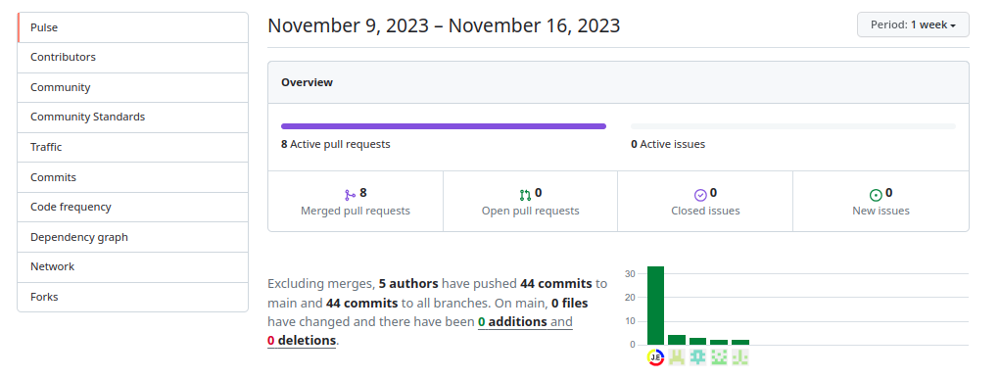

Sobre este Sitio
La planificación de la elaboración de una página web utilizando las tecnologías de comunicación de WhatsApp y GitHub se llevó a cabo de la siguiente manera:

- Definición de los Requisitos: Primero, se definieron los requisitos del proyecto. Esto incluyó la identificación de las características clave que la página web debía tener y cómo las tecnologías de WhatsApp y GitHub se integrarían en estas características.
- Diseño: Se realizó un diseño preliminar de la página web. Se crearon maquetas y prototipos para visualizar cómo se vería la página web y cómo funcionarían las características.
- Desarrollo: Se inició el desarrollo de la página web. Se utilizó GitHub para el control de versiones y la colaboración en el código. Los desarrolladores pudieron compartir y revisar el código, realizar cambios y seguir el progreso del proyecto. Excluyendo las fusiones, participaron un total de 5 autores que han enviado 44 confirmaciones a la rama principal y 44 confirmaciones a todas las ramas. En principal, 0 archivos han cambiado y ha habido 0 adiciones y 0 eliminaciones .
- Integración de WhatsApp: Se utilizo WhatsApp como medio de comunicacion que permitió a los usuarios interactuar entre nosotros referente a los aspectos de la página web a través de WhatsApp. Por ejemplo, los usuarios podrían recibir orientaciones sobre aspectos de importancia.
- Pruebas: Se realizaron pruebas exhaustivas para asegurar que todas las características funcionaran como se esperaba y que la sincronizacion de GitHub fuera exitosa.
- Lanzamiento y Mantenimiento: Finalmente, la página web se lanzó al público via repositorio. Se utilizó GitHub para seguir gestionando el código y realizar actualizaciones y mejoras en la página web. Además, se continua utilizando WhatsApp para proporcionar soporte y recibir comentarios sobre implementaciones necesarias.
Se utilizo la combinación de Bootstrap, JavaScript como tecnologias de desarrollo y GitHub permitió un desarrollo eficiente y colaborativo de nuestro proyecto web. Cada una de estas tecnologías desempeñó un papel crucial en diferentes aspectos del desarrollo, desde el diseño de la interfaz de usuario hasta la implementación de funciones y la gestión del código.
- Bootstrap: Bootstrap es un marco de diseño (framework) de código abierto para el desarrollo de sitios web y aplicaciones móviles. Proporciona plantillas de diseño basadas en HTML y CSS para tipografía, formularios, botones, navegación y otros componentes de la interfaz. En nuestro proyecto, utilizamos Bootstrap para crear una interfaz de usuario consistente y receptiva con menos esfuerzo. Las clases predefinidas de Bootstrap nos permitieron diseñar rápidamente elementos de la interfaz de usuario y garantizar que nuestro sitio web se vea bien en diferentes tamaños de pantalla.
- JavaScript: JavaScript es un lenguaje de programación que permite implementar funciones complejas en las páginas web. En nuestro proyecto, utilizamos JavaScript para agregar interactividad a nuestro sitio web, como animaciones, formularios interactivos y contenido dinámico. JavaScript también nos permitió manipular el DOM (Modelo de Objetos del Documento) para actualizar el contenido de la página web en tiempo real sin tener que recargar la página.
- GitHub: GitHub es una plataforma de desarrollo colaborativo que utiliza Git para el control de versiones. En nuestro proyecto, utilizamos GitHub para gestionar y rastrear cambios en el código fuente. GitHub facilitó la colaboración entre los miembros del equipo permitiendo que varios desarrolladores trabajen en diferentes características al mismo tiempo sin conflictos de código. Además, GitHub proporcionó un historial de cambios en el código, lo que facilitó la identificación y corrección de errores.
Este proyecto está bajo la Licencia (GNU V3.0) - mira el archivo LICENSE para detalles
La licencia de distribución del contenido bajo la Licencia Pública General de GNU, o GNU GPL, es una licencia de derechos de autor ampliamente utilizada que garantiza a los usuarios finales las libertades de usar, estudiar, compartir y modificar el software. Su propósito es declarar que el software está cubierto por los derechos de autor de los titulares, pero que los usuarios pueden distribuir y modificar el software bajo los términos de la licencia.
La GPL es una licencia copyleft, lo que significa que cualquier trabajo derivado del software original debe ser distribuido bajo la misma licencia. Esto asegura que cualquier mejora o modificación del software original permanece libre y abierta para el beneficio de todos.
La GPL fue creada por Richard Stallman en 1989 para proteger el sistema operativo GNU y ha sido adoptada por muchos proyectos de software libre y de código abierto. La GPL garantiza que el software permanece libre y que las mejoras benefician a toda la comunidad.
La licencia de distribución del contenido bajo la Licencia Pública General de GNU, o GNU GPL, es una licencia de derechos de autor ampliamente utilizada que garantiza a los usuarios finales las libertades de usar, estudiar, compartir y modificar el software. Su propósito es declarar que el software está cubierto por los derechos de autor de los titulares, pero que los usuarios pueden distribuir y modificar el software bajo los términos de la licencia.
La GPL es una licencia copyleft, lo que significa que cualquier trabajo derivado del software original debe ser distribuido bajo la misma licencia. Esto asegura que cualquier mejora o modificación del software original permanece libre y abierta para el beneficio de todos.
La GPL fue creada por Richard Stallman en 1989 para proteger el sistema operativo GNU y ha sido adoptada por muchos proyectos de software libre y de código abierto. La GPL garantiza que el software permanece libre y que las mejoras benefician a toda la comunidad.